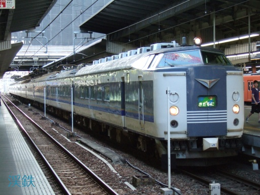
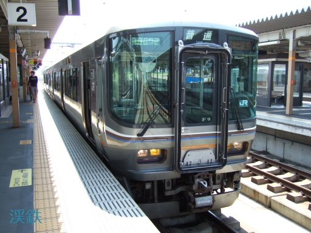
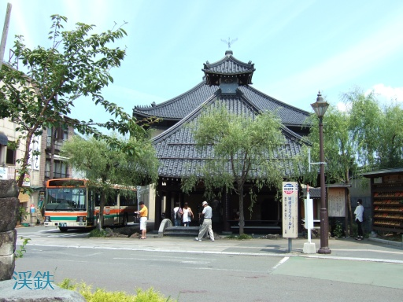
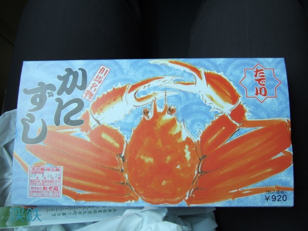
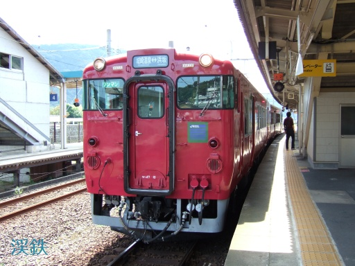

餘部橋梁視察
餘部橋梁とは， 山陰本線の鎧 - 餘部間にある単線鉄道橋のことです． 2010年7月に役目を終えた初代の橋梁は，「餘部鉄橋」の通称で親しまれていました． 「餘部鉄橋」は，1912年（明治45年）に完成した全長310.59m， 高さ41.45mを誇る日本最長のトレッスル橋でした． 2010年8月からは，「餘部鉄橋」の内陸側に並行して建設された エクストラドーズドPC橋が2代目の餘部橋梁として運用されています．
既に新橋梁の建設が進行中だった2009年8月末， 現役の間に一度は見ておこうと思い，初めて餘部を訪れました． 残り1日分の青春18きっぷが手元にあったので， これを利用した大阪からの日帰り旅行でした．
このページでは，視察当日の乗車記や撮影した写真を紹介します．
往路
| 往路 |
|---|
|
大阪 -[東海道本線・新快速]-> 京都 -[山陰本線・普通]-> 福知山 福知山 -[山陰本線・普通]-> 城崎温泉 -[山陰本線・普通]-> 餘部 |
単純往復では面白くないので，往路は東海道本線および山陰本線経由，復路は福知山線経由にしました． 自宅を早朝に出発し，大阪から新快速で京都まで移動します．
今回の旅行には関係ありませんが，大阪駅に583系の急行きたぐにが到着していたので一枚．
京都から山陰本線に入りました．京都から園部までは221系（4両）と223系5500番台（2両）の6両併結運転です． 園部で221系を切り離し，福知山までは223系のみの2両編成になります． 青春18きっぷの有効期間ということもあってか， 園部まで221系に乗っていた乗客も223系側に押し込まれる形になり， 結構混雑していたと思います． どうでもいい話ですが，私はこの時，冷房で体が冷えて腹痛に苦しんでいました…．
福知山から城崎温泉までの区間も，223系5500番台でした． この辺りまで来たのは随分久しぶりでした．
乗り換え時間を利用し，昼食調達も兼ねて城崎温泉で途中下車しました． 駅を出てすぐ隣に足湯ができていました．さすが温泉地ですね． 時間がなくて入れなかったのは残念です．
昼食くらいは豪華にしようと，城崎温泉で駅弁を購入しました． 「但馬名物かにずし」は昭和30年代登場の歴史ある駅弁で， 甘酢漬けのカニのほぐし身が酢飯によく合っています． 城崎温泉を訪れた際は，是非どうぞ．
城崎温泉から餘部までは，キハ47系2両編成に乗車です．いよいよ餘部橋梁を横断します．
本稿は3ページ構成となっています．続きは次のページにどうぞ！